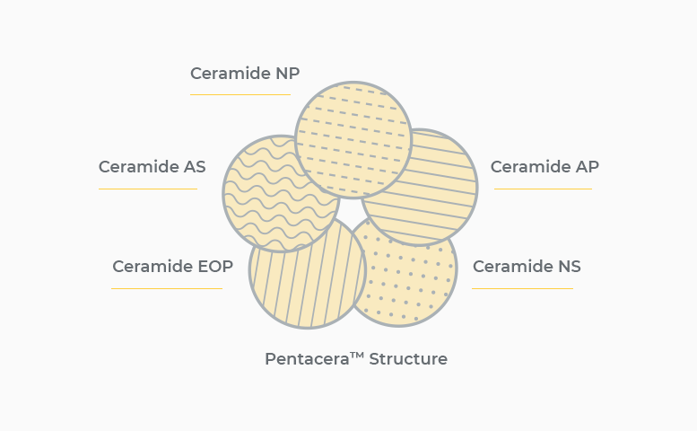

세라마이드: 신생아 피부 관리의 핵심
생후 4년까지 아이의 피부는 외부 유해물질로부터 보호하고 수분증발을 방지해주는 지질량이 부족하답니다. 피부지질의 40~65%는 세라마이드로 구성되어 있기에, 어린 피부 관리에서 세라마이드의
중요성을 많이 이야기하죠.
핵심 보습성분: Pentacera™
튼튼한 피부장벽에 중요한 세라마이드는 지금까지 14종이 발견되었고 이 중 7종이 화장품에 사용되고 있어요. 노엘로힐스는 그 중에서도 보습과 수분 유지에 중요한 역할을 하는 5가지
세라마이드를 선별해 PentaceraTM를 만들었습니다. PentaceraTM는 피부장벽 기능을 개선시켜주고 피부를 건조하지 않게 유지시켜준답니다.

Pentacera의 5가지 세라마이드
Ceramide NP : 피부 보습력 강화
Ceramide NS : 피부 수분 흡수력과 유지력 강화
Ceramide AP : 수분 전달 활성화 및 피부 장벽 보수
Ceramide AS : 피부 장벽 강화
Ceramide EOP : 피부 보호 기능